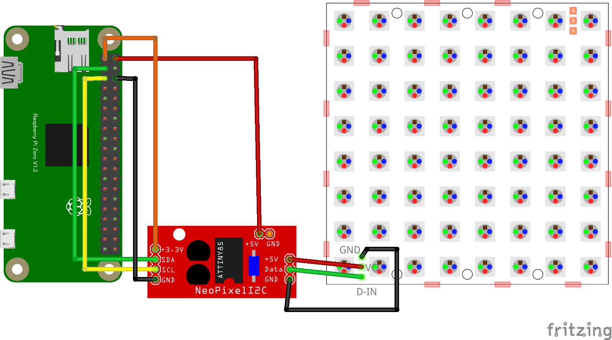

NeoPixel
Neopixel LED
概要
- 個別に制御可能な RGB （赤・緑・青）LED のブランド名
- 主に WS2812B や SK6812 といった制御 IC を内蔵した LED を使用
- 1 本のデータ線で複数の LED を直列に接続し、個別に制御できるのが特徴
配線図


CHIRIMEN 用ドライバのインストール
npm i @chirimen/neopixel-i2cサンプルコード (main.js)
import { requestI2CAccess } from "./node_modules/node-web-i2c/index.js";
import NPIX from "@chirimen/neopixel-i2c";
const sleep = msec => new Promise(resolve => setTimeout(resolve, msec));
const neoPixels = 7; // LED個数
main();
async function main() {
const i2cAccess = await requestI2CAccess();
const port = i2cAccess.ports.get(1);
const npix = new NPIX(port, 0x41);
await npix.init(neoPixels);
await nPixTest1(npix);
await nPixTest2(npix);
await nPixTest3(npix, pattern4);
await npix.setGlobal(0, 0, 0);
}
async function nPixTest1(npix) {
// 全LEDを同じ色にするケース
await npix.setGlobal(10, 0, 0);
await sleep(200);
await npix.setGlobal(0, 10, 0);
await sleep(200);
await npix.setGlobal(0, 0, 10);
await sleep(200);
await npix.setGlobal(0, 20, 20);
await sleep(200);
await npix.setGlobal(20, 0, 20);
await sleep(200);
await npix.setGlobal(20, 20, 0);
await sleep(200);
await npix.setGlobal(20, 20, 20);
await sleep(200);
await npix.setGlobal(0, 0, 0);
}
// パターンはRRGGBB の並びで
const pattern0 = [0xff0000, 0x00ff00, 0x0000ff, 0xff0000, 0x00ff00, 0x0000ff, 0xff0000];
const pattern1 = [0x000000, 0x00ff00, 0x0000ff, 0xff0000, 0x00ff00, 0x0000ff, 0xff0000];
const pattern2 = [0x000000, 0x000000, 0x0000ff, 0xff0000, 0x00ff00, 0x0000ff, 0xff0000];
const pattern3 = [0x000000, 0x000000, 0x000000, 0xff0000, 0x00ff00, 0x0000ff, 0xff0000];
const pattern4 = [0x000000, 0x000000, 0x000000, 0x000000, 0x00ff00, 0x0000ff, 0xff0000];
const pattern5 = [0x000000, 0x000000, 0x000000, 0x000000, 0x000000, 0x0000ff, 0xff0000];
const pattern6 = [0x000000, 0x000000, 0x000000, 0x000000, 0x000000, 0x000000, 0xff0000];
const pattern7 = [0x000000, 0x000000, 0x000000, 0x000000, 0x000000, 0x000000, 0x000000];
async function setPattern(npix, pattern) {
// パターン設定
const grbArray = [];
for (const color of pattern) {
const r = color >> 16 & 0xff;
const g = color >> 8 & 0xff;
const b = color & 0xff;
grbArray.push(g);
grbArray.push(r);
grbArray.push(b);
}
await npix.setPixels(grbArray);
}
async function nPixTest2(npix) {
// パターンを変化させる
await setPattern(npix, pattern0);
await sleep(200);
await setPattern(npix, pattern1);
await sleep(200);
await setPattern(npix, pattern2);
await sleep(200);
await setPattern(npix, pattern3);
await sleep(200);
await setPattern(npix, pattern4);
await sleep(200);
await setPattern(npix, pattern5);
await sleep(200);
await setPattern(npix, pattern6);
await sleep(200);
await setPattern(npix, pattern7);
}
async function nPixTest3(npix, pattern) {
// パターンを流す
for (let i = 0; i < 30; i++) {
const p = i % pattern.length;
const spattern = [];
for (let px = 0; px < pattern.length; px++) {
const pp = (i + px) % pattern.length;
spattern.push(pattern[pp]);
}
console.log(spattern);
await setPattern(npix, spattern);
await sleep(200);
}
}